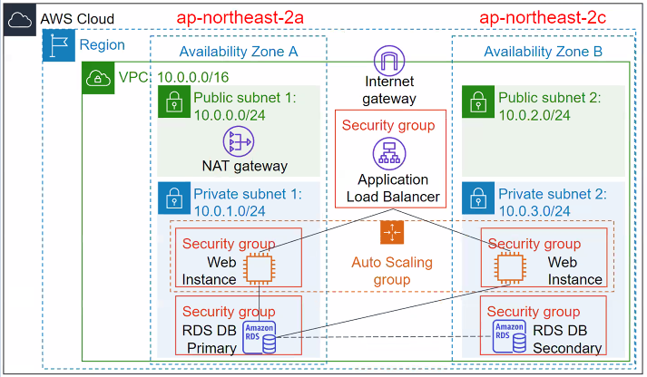
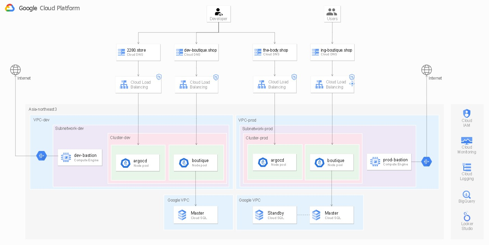

{{ page.title }}
{% case page.title %} {% when 'Address Book' %}Summary
온라인 쇼핑몰
사용자는 페이지 접속 후, 사용자 정보와 구매할 도서 정보를 입력하게 됩니다.
서버는 Docker image를 이용하여 K8s를 구축했습니다.
데이터베이스는 GCP를 이용하여 구축했습니다.
Tools & Library
Architecture
GKE를 이용하여 마이크로 서비스를 배포합니다.
개발계와 운영계를 VPC 레벨에서 분리했으며
각 환경에는 하나의 클러스터 내 두개의 노드풀(Service, ArgoCD)로 구성되어있습니다.
Kubernetes 내 리소스는 환경별 Bastion VM에서만 제어할 수 있습니다.
데이터베이스는 Cloud SQL-PostgreSQL을 사용하며 환경과 목적에 따라 LB와 도메인을 구분하여 사용합니다.
Github Repository
Terraform 파일 관리를 위한 Repository입니다.
{% when 'Petclinic' %}
Summary
우리 페이지는 도서 구매 예약 시스템을 운영합니다.
사용자는 페이지 접속 후, 사용자 정보와 구매할 도서 정보를 입력하게 됩니다.
서버는 Docker image를 이용하여 K8s를 구축했습니다.
데이터베이스는 GCP를 이용하여 구축했습니다.
(현 프로젝트는 제공받은 Petclinic 코드를 일부 수정하여 진행했습니다.)
Tools & Library
{% else %}
Summary
온라인 쇼핑몰
사용자는 페이지 접속 후, 사용자 정보와 구매할 도서 정보를 입력하게 됩니다.
서버는 Docker image를 이용하여 K8s를 구축했습니다.
데이터베이스는 GCP를 이용하여 구축했습니다.
를 활용해 구축했습니다
Tools & Library
Architecture
GKE를 이용하여 마이크로 서비스를 배포합니다.
개발계와 운영계를 VPC 레벨에서 분리했으며
각 환경에는 하나의 클러스터 내 두개의 노드풀(Service, ArgoCD)로 구성되어있습니다.
Kubernetes 내 리소스는 환경별 Bastion VM에서만 제어할 수 있습니다.
데이터베이스는 Cloud SQL-PostgreSQL을 사용하며 환경과 목적에 따라 LB와 도메인을 구분하여 사용합니다.
Github Repository
Terraform 코드와 Kubernetes yaml 파일 관리를 위한 Repository입니다.
Kustomize를 사용해 서비스의 이미지를 관리하고 배포합니다.
Online Boutique 소스 코드와 Dockerfile 및 Cloudbuild.yaml 파일 관리를 위한 Repository입니다.
{% endcase %}